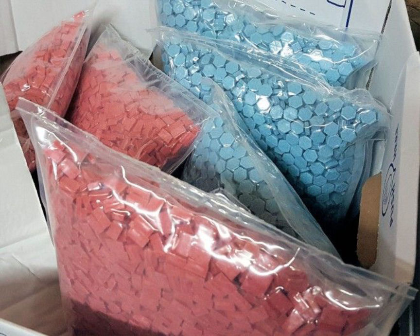
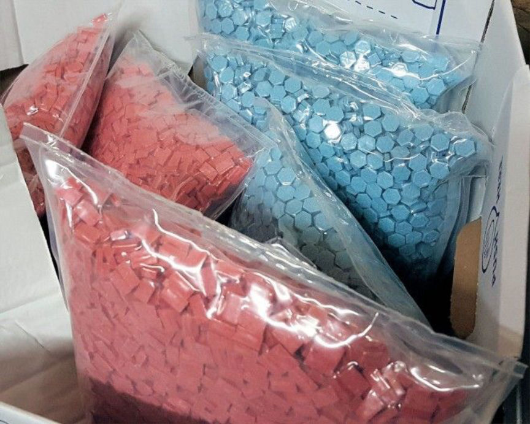

German and Dutch Authorities Bust Dutch Darkweb Vendor
~1 min read | Published on 2018-12-15, tagged Arrested, Darkweb-Vendor, Drug-Bust, Drugs using 192 words.
German Customs announced the arrest of a darkweb ecstasy vendor living in the Netherlands. The vendor has been linked to at least 3,300 transactions, authorities revealed.
Drug dealer from the Netherlands arrested
Officials of the Customs Investigations Office in Frankfurt arrested a 32-year-old Dutch citizen on December 11, 2018. He is suspected of having sold narcotics in more than 3,300 cases via a sales platform in the so-called Darknet to buyers in Germany and abroad.
During searches in his home in the Netherlands and in a holiday home in the province of Gelderland, officials employed in cooperation with the Dutch authorities were able to secure several kilograms of narcotics, including more than 10,000 ecstasy tablets, laboratory supplies, packaging materials and other evidence.
Since the summer of 2018, the investigators have been on the trail of the suspect. In addition to cocaine and amphetamine, he also offered marijuana, hashish and ecstasy tablets worldwide. Criminal tactics and the involvement of the Central Office Internet Search of the Customs Office have succeeded in identifying the suspect despite the anonymization in the Darknet and arresting him in the act of sending the narcotics in Kleve.
Source: Zoll

Drug dealer from the Netherlands arrested
Officials of the Customs Investigations Office in Frankfurt arrested a 32-year-old Dutch citizen on December 11, 2018. He is suspected of having sold narcotics in more than 3,300 cases via a sales platform in the so-called Darknet to buyers in Germany and abroad.
During searches in his home in the Netherlands and in a holiday home in the province of Gelderland, officials employed in cooperation with the Dutch authorities were able to secure several kilograms of narcotics, including more than 10,000 ecstasy tablets, laboratory supplies, packaging materials and other evidence.
Since the summer of 2018, the investigators have been on the trail of the suspect. In addition to cocaine and amphetamine, he also offered marijuana, hashish and ecstasy tablets worldwide. Criminal tactics and the involvement of the Central Office Internet Search of the Customs Office have succeeded in identifying the suspect despite the anonymization in the Darknet and arresting him in the act of sending the narcotics in Kleve.
Source: Zoll

Ecstasy from Drug Bust